Feedback"Create a fraud data visualisation based on the slides: observability, clean UI, modern."
What changed
- Overview to spot problems: summary cards, alert volume by hour, risk score distribution, top risk factors, data source health.
- Case queue to choose what to work on next, with a risk marker on every row.
- Case investigation to decide: risk gauge, AI summary with exact figures, score breakdown, findings, source evidence, colour-coded decision.
Why
- Big picture first, then evidence
- Exact figures, not vague words
- Explain the score
- Colour has meaning
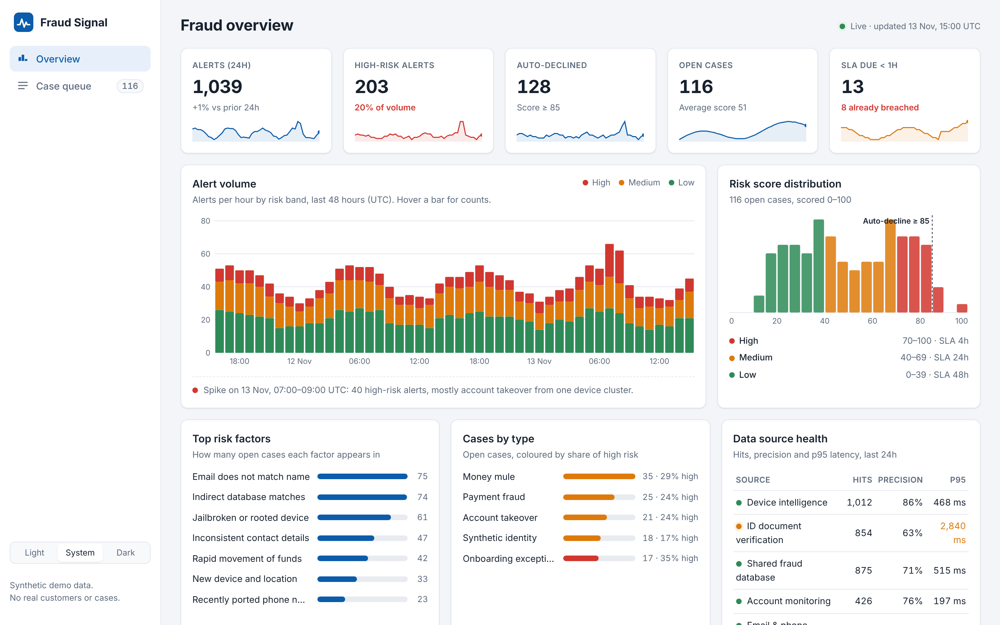
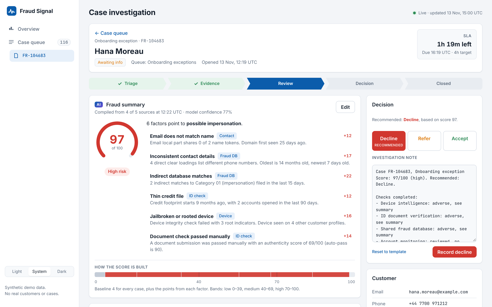
Feedback"Is this [the early wireframe slide] included?" … "Can you have filters and toggles too?"
What changed
- Risk Hub scores each fraud type separately.
- At a glance one-line summary, and a full customer profile: date of birth, address history, electoral roll, income, credit score.
- Examine / Mitigate on each finding, and feedback on the AI summary.
- Shared filters (risk, case type, data source) and toggles (time range, chart lines, compact rows, urgent only).
Why
- Evidence in one place
- Narrow down without losing context
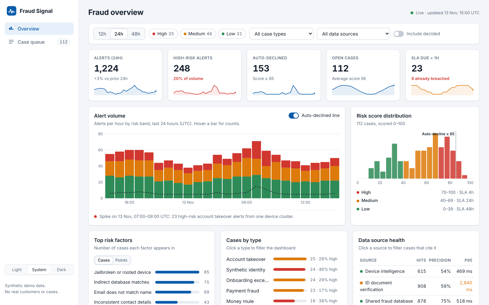
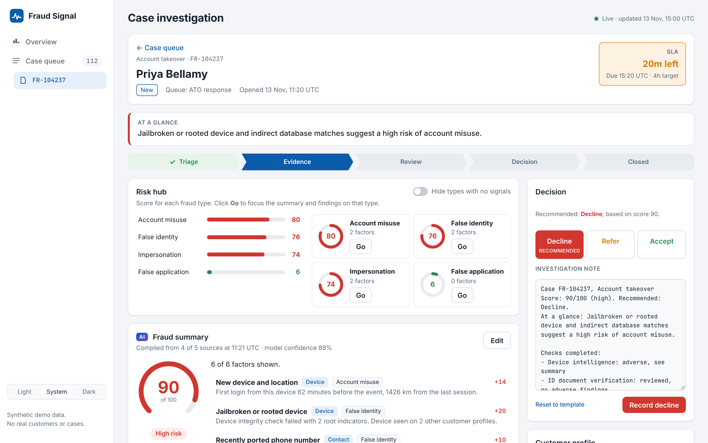
Feedback"There's no info in the graphs, such as alerts, high-risk alerts and auto-declined, when I click on the graph, whereas Alert volume has it."
What changed
- Hover or tap any summary card's trend line to see the value for that hour.
- Two trend lines were decorative. They are now worked out from real case data and match the card's number.
- The risk score chart shows the count and share for each score range.
Why
- Charts readable on their own
- Numbers agree with each other
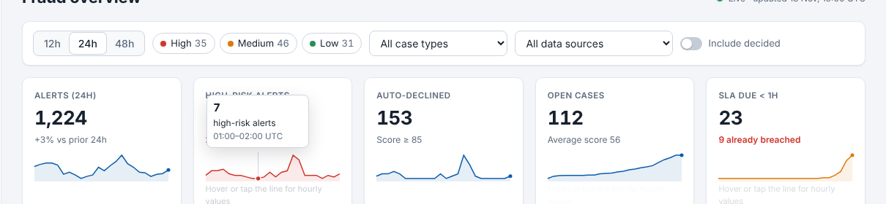
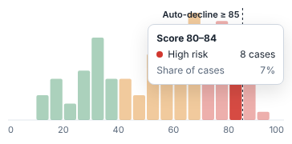
Feedback"I think people would not know what impersonation, false identity and false application mean in the Risk Hub." … "Can we have an info icon with help text on what they mean?"
What changed
- A one-line plain meaning on each fraud type, e.g. Impersonation: someone is using a real person's stolen details.
- An ⓘ icon with the full meaning and an example, by hover, keyboard or tap.
- A "What do these mean?" panel listing the signals behind each type for the case.
- Fixed which fraud type each factor belongs to. A type with no evidence now scores 0.
Why
- Plain language, not jargon
- Help where it's needed
- Numbers agree with each other
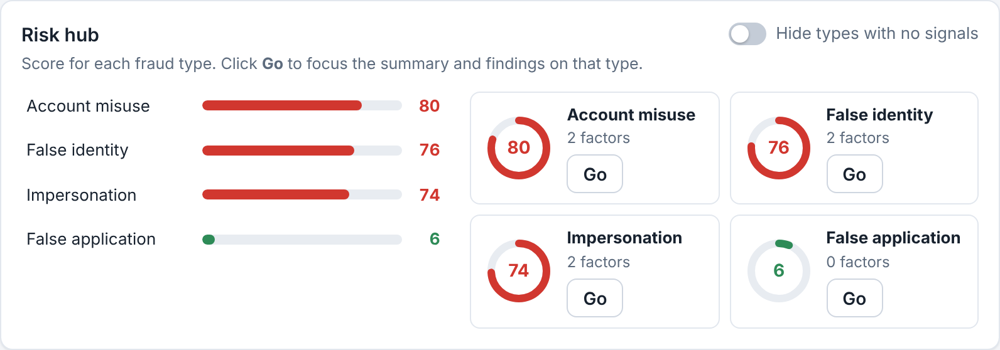
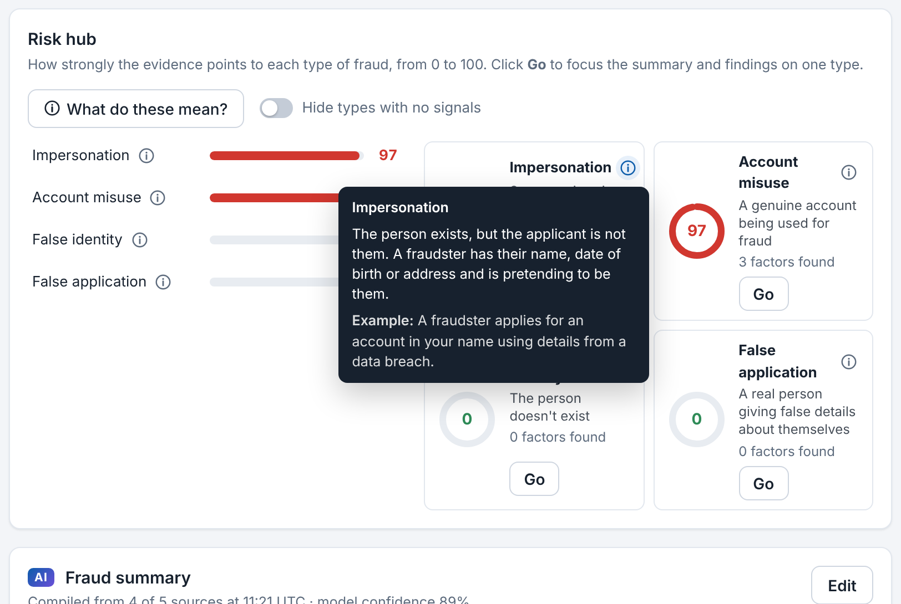
Feedback"In Risk Hub we have two, one with the bar and one with the circles. Isn't it the same information? And what does Go mean to the users?"
What changed
- Bars and rings merged into one row per fraud type, with a risk label.
- "Go" became "Show 3 factors", and "Show all evidence" to undo it.
- Types with no evidence say "No evidence found" instead of offering a button.
Why
- Show information once
- Buttons say exactly what happens
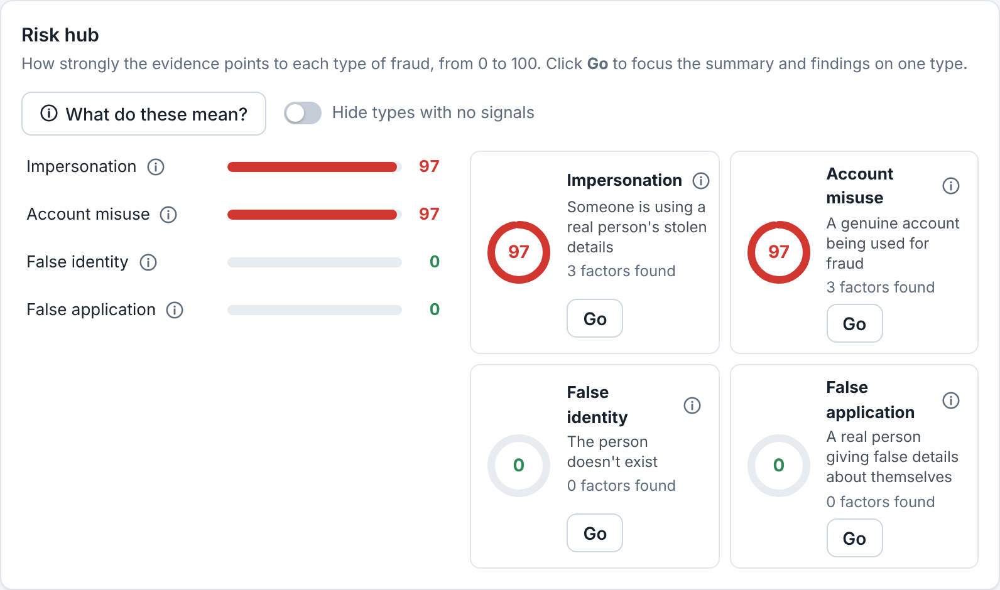
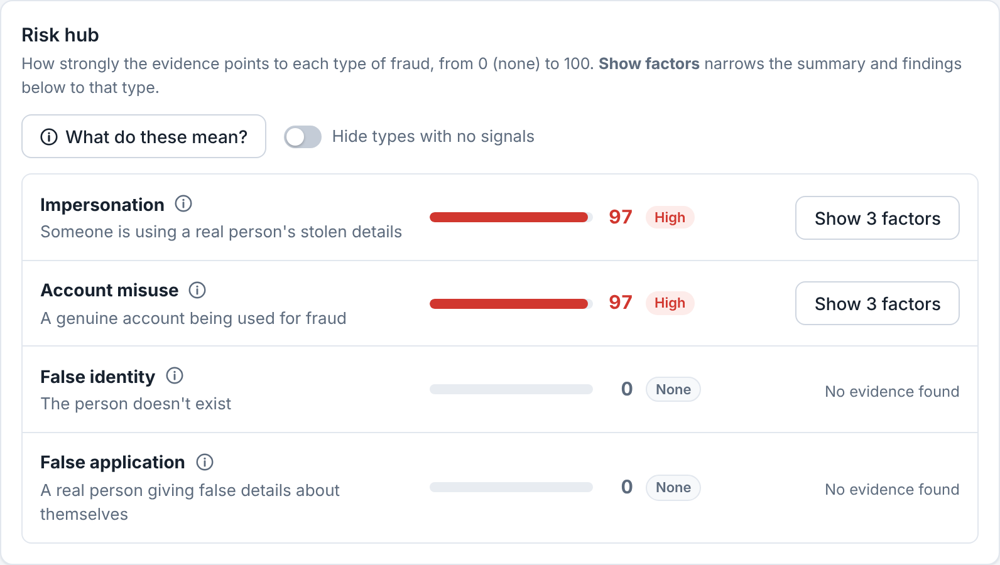
Feedback"In the Findings section, what do Substantiation, Mitigation and Unaligned mean?"
What changed
- Plain labels under each column: Supports fraud, Lowers the risk, Doesn't point either way.
- An ⓘ icon on each with the full meaning and an example.
- The section explains what Examine and Mitigate do.
Why
- Plain language, not jargon
- Keep terms experts already use
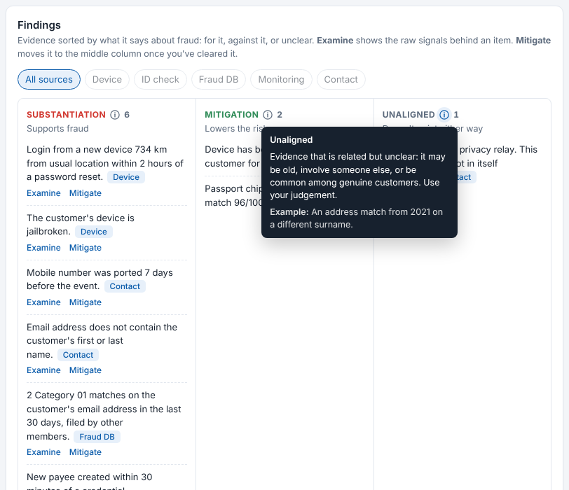
Feedback"Is the decision taken by the LLM?" … "If I decline, refer or accept, where will I leave my note on what basis I took the decision?"
What changed
- A clear statement: you make the final decision. The AI summarises the evidence. The recommendation comes from the risk score.
- A required reason code for each outcome and a required explanation in the specialist's own words.
- Going against the recommendation is flagged and saved as an override.
- After recording, the decision, reason and explanation stay visible and appear in the timeline.
Why
- The specialist decides, not the AI
- Every decision has a reason
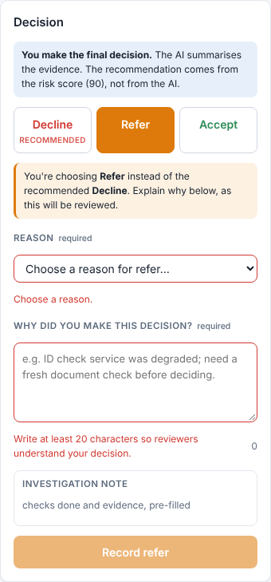
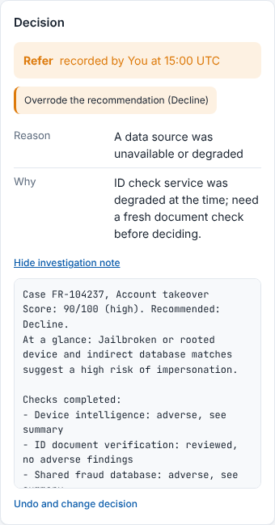
Feedback"I saw that we still have an investigation note under it. Is this done by AI?"
What changed
- The pre-filled text became a read-only case snapshot, labelled as built by a fixed template, not by AI or a person. Its one AI-written line is marked.
- The snapshot is attached to the decision automatically.
- The specialist writes in only two places: the required reason and optional Additional notes.
Why
- Mark anything written by AI
- One clear place to write
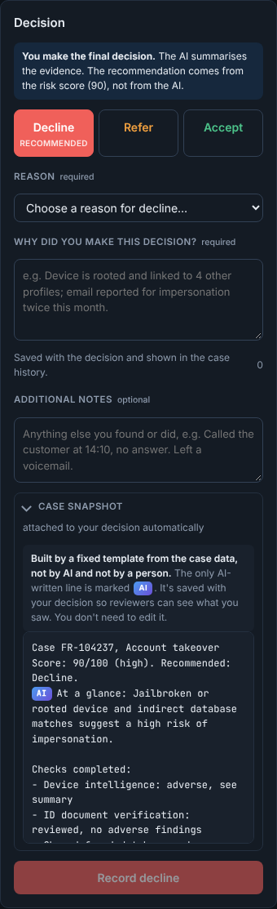
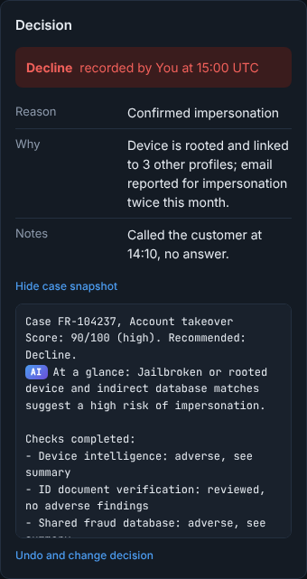
Feedback"Please make sure you use the SLDS 2 design system" (SLDS 2 Pattern: Agentic Experiences)
What changed
- The official SLDS 2 stylesheet, with every colour, font, radius and shadow from SLDS 2 styling hooks.
- SLDS 2 buttons, select menus, toggles, path, tabs, tables, badges and toasts.
- Agentic card for AI content: sparkle icon, aurora border and glow, AI label, disclaimer.
- Human feedback: helpful, not helpful with reasons, and copy, confirmed by a toast.
Why
- Use the design system
- Mark AI content consistently and sparingly
- Standard feedback on every AI response
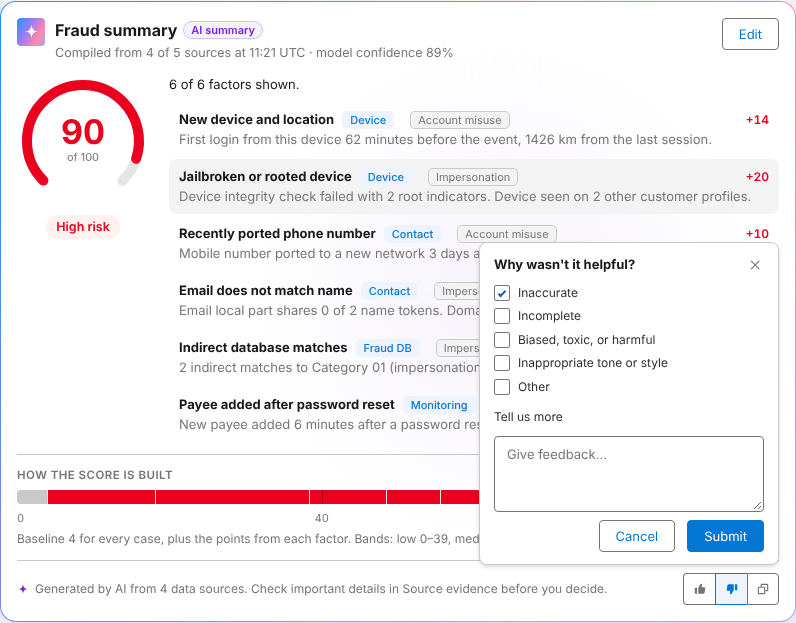
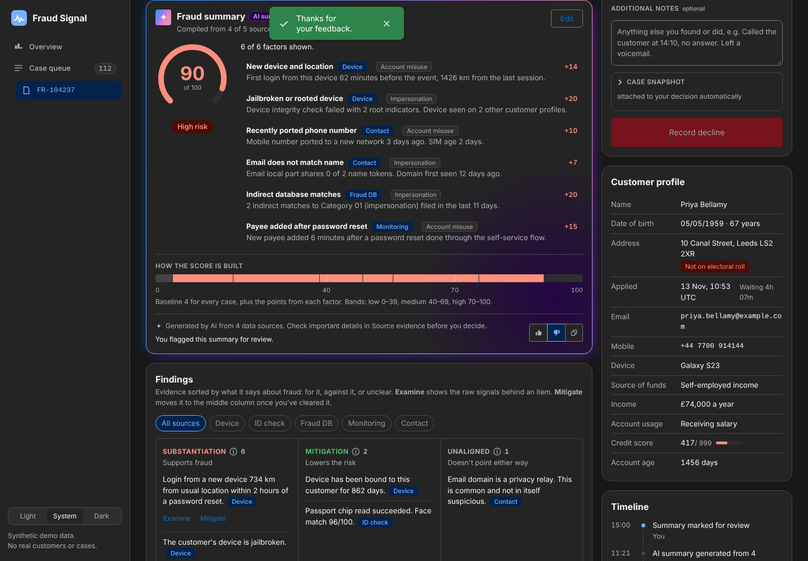
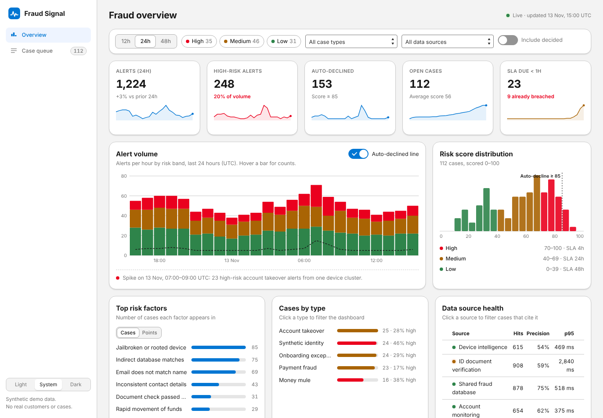
Feedback"Can you make sure we have used the design system rules, from typography, text, tables, buttons, filters, colours, cards, timeline to everything?" (Components for Web | Lightning Design System 2)
What changed
- Switched to the Cosmos theme the Figma library is drawn in: pill buttons, 1.25rem cards, navy headings, and dark mode built into SLDS 2.
- Regular-weight headings and sentence-case labels on the SLDS type scale.
- SLDS page headers (list view meta line; record header with breadcrumb and key fields) and vertical navigation.
- Filters use checkbox and radio button groups. Meters use progress bars. The timeline is the SLDS activity timeline.
- Charts use the SLDS 2 data palette.
Why
- Follow the system's rules, not just its colours
- Use the right control for the choice
- Consistent with every other Lightning page
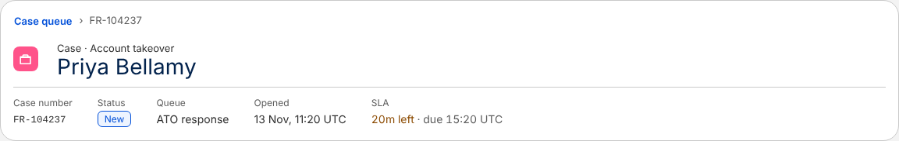
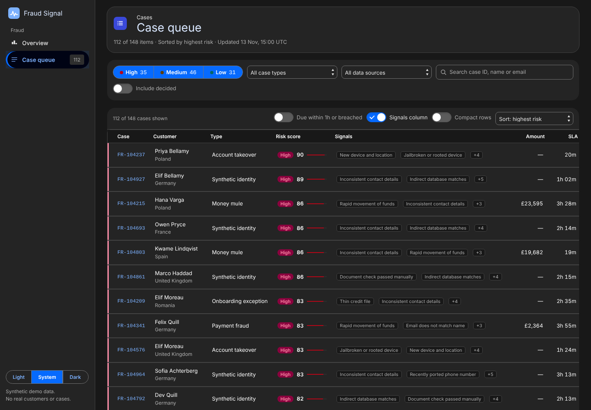
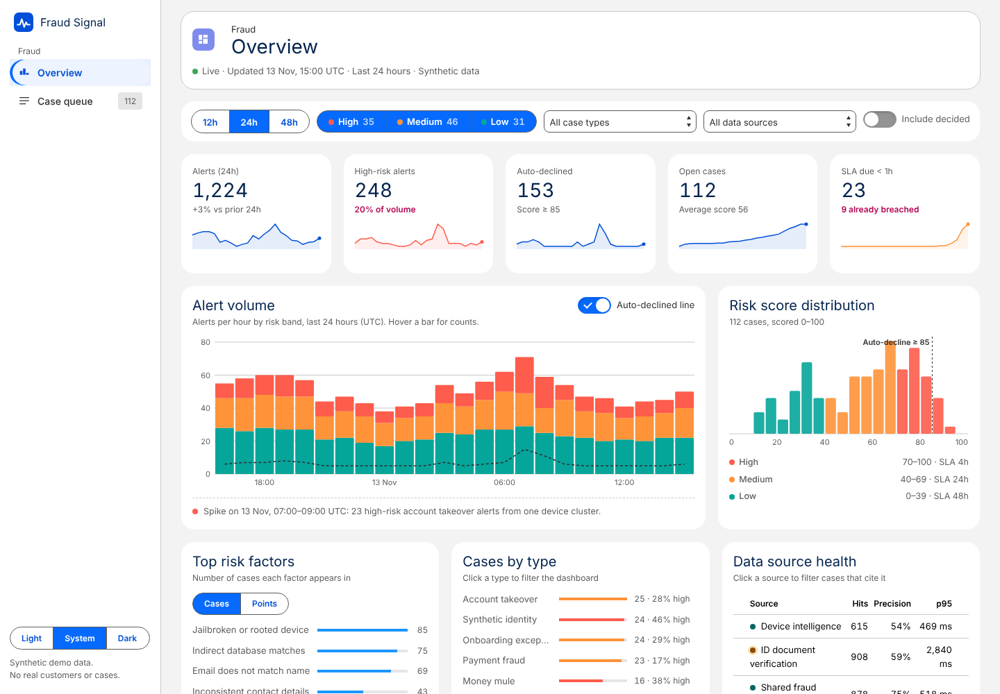
Feedback"Why do we have this half circle on the side? Can you align with SLDS 2?"
What changed
- SLDS 2 marks the active item with a full-width tint and a straight 4px bar. Our pill shape had bent that bar into a half circle.
- Removed the custom styling, so SLDS 2 draws the active, hover and section-title states itself.
Why
- Set layout only on system components
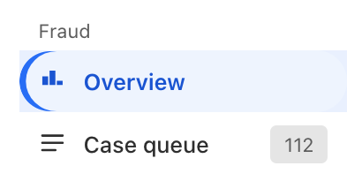
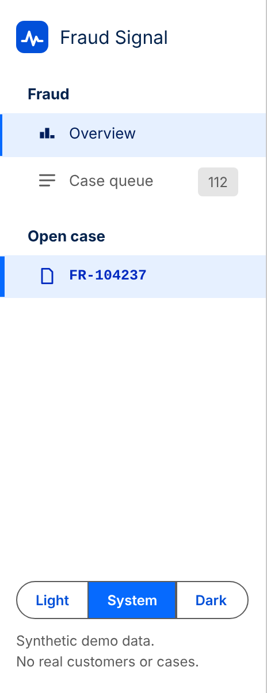
Feedback"On the Top risk factors, what do Cases and Points mean?"
What changed
- Cases = how common a factor is. Points = how much it raises a case's risk score on average. Every row now shows both, e.g. "85 cases · +15 pts".
- The switch reads "Sort by: Most common | Biggest impact".
- An ⓘ explains both measures. Factor names are no longer cut off.
Why
- Say what a number measures
- Show related numbers together
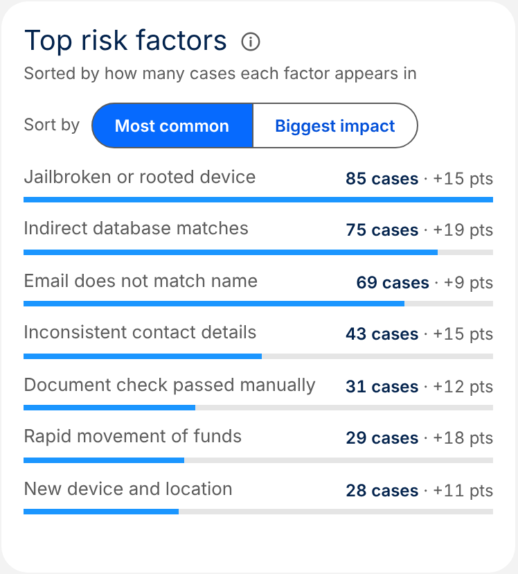
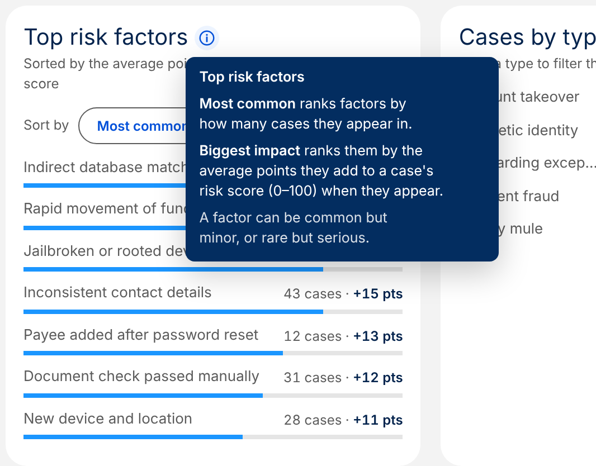
Feedback"Is it possible to create a design system file in GitHub … so developers and designers can work in live code?" … "Also have documentation like the story, a storybook for the design system, which is separate?"
What changed
- Storybook with foundations, components, charts and AI patterns, each with editable controls and a light/dark switch.
- A separate design system site with live examples, copyable code and do / don't rules: open it.
- DESIGN_SYSTEM.md with token tables mapped to SLDS 2, and one import point for every component.
Why
- Design and code share one source
- Rules live next to the components
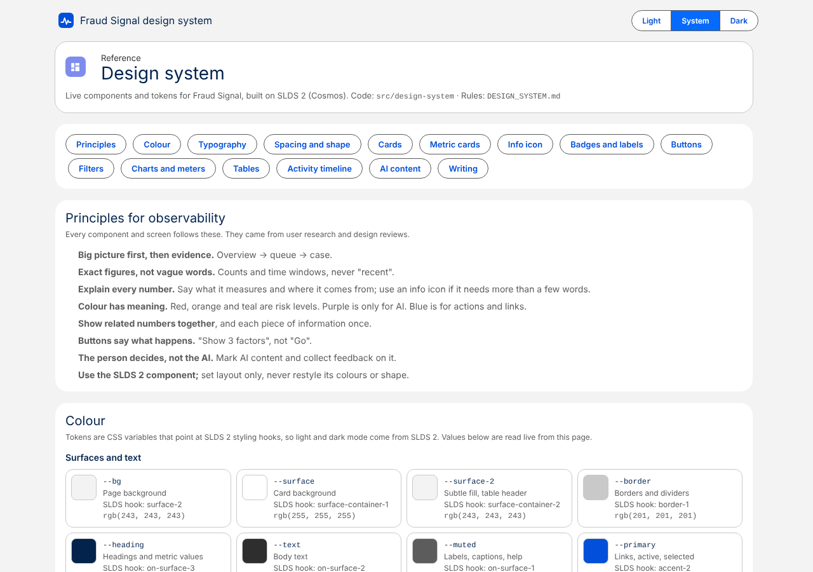
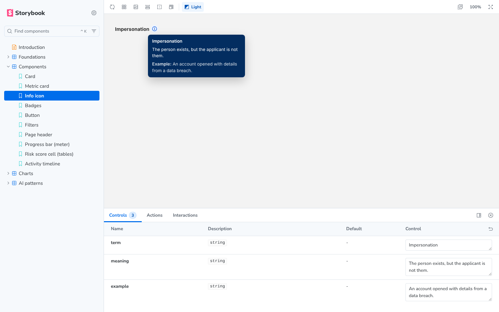
Feedback"In the Decision section, is the colour of the Decline, Refer and Accept buttons based on the SLDS 2 design system?"
What changed
- Only partly before: the choice buttons and Record refer were recoloured SLDS buttons.
- The choice is now an SLDS radio button group, with the recommendation on a line below.
- Record uses SLDS variants only: destructive (Decline), brand (Refer), success (Accept).
Why
- Never recolour a system component
- Use the right control for the choice
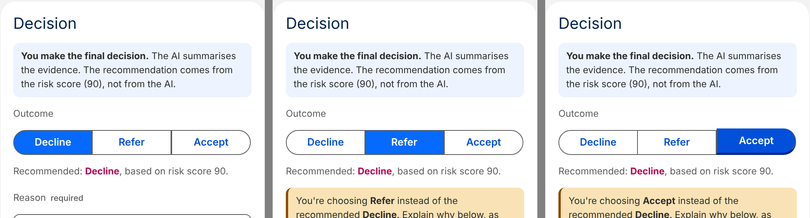
Feedback"What's the rule on when to use a radio button and a dropdown?" … "Only Cancel is red, right? Also primary vs secondary logic exists too."
What changed
- One primary Record button for every outcome; only the label changes.
- Red is only for delete or remove. Cancel is secondary, never red.
- The Risk Hub toggle is secondary, so each area has one primary button.
- Button hierarchy and "choosing a control" rules added to the design system.
Why
- One primary action per area
- Pick the control by the choice
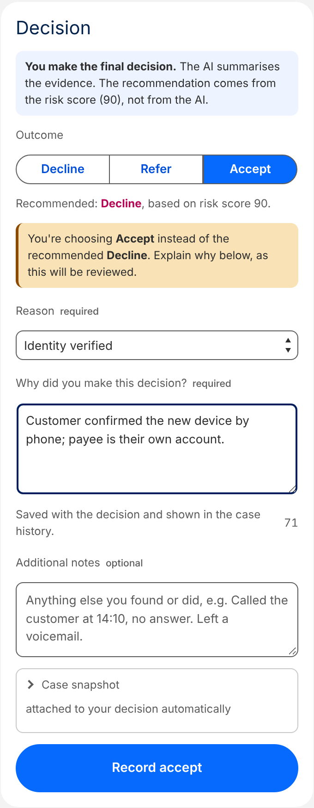
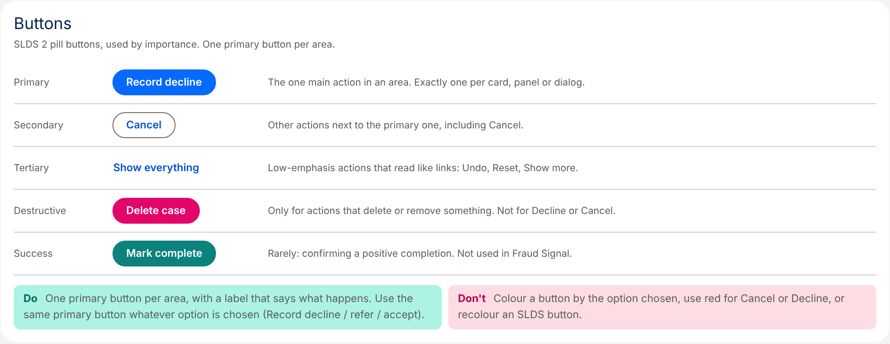
Feedback"Here is the scoped notification. Can you please apply it where necessary, with the icons?"
What changed
- SLDS 2 scoped notifications with their utility icons: default, info, warning, error, success.
- Used for the alert spike, a degraded data source, SLA breached or due soon, who decides, overriding the recommendation, the recorded decision, and empty states.
- Most include a next step, e.g. Show affected cases.
Why
- Status shown where it applies
- Every warning has a next step
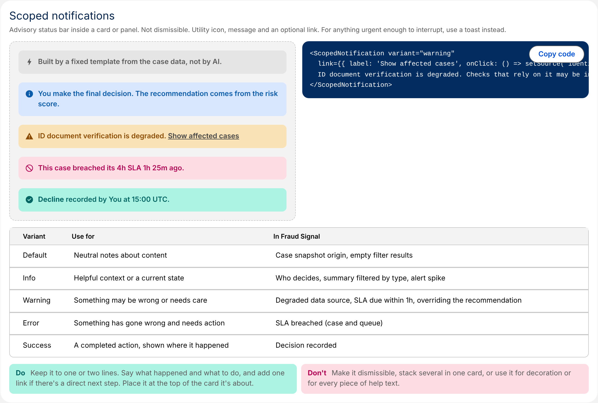
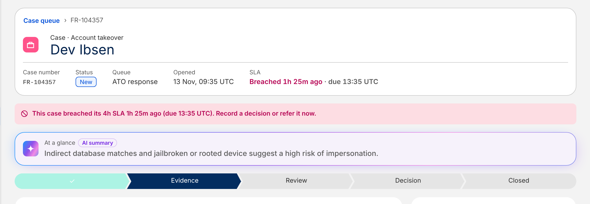
Feedback"In the Fraud summary we have an Edit button but I cannot edit anything?"
What changed
- The button only took factors out of the score, so it's now Adjust score, with an info note explaining it.
- SLDS checkboxes; excluded factors are struck through and the gauge shows the adjustment.
- The adjustment is saved with the decision and in the timeline. The AI's text stays read-only for the audit trail.
Why
- Labels match what happens
- Every change is recorded
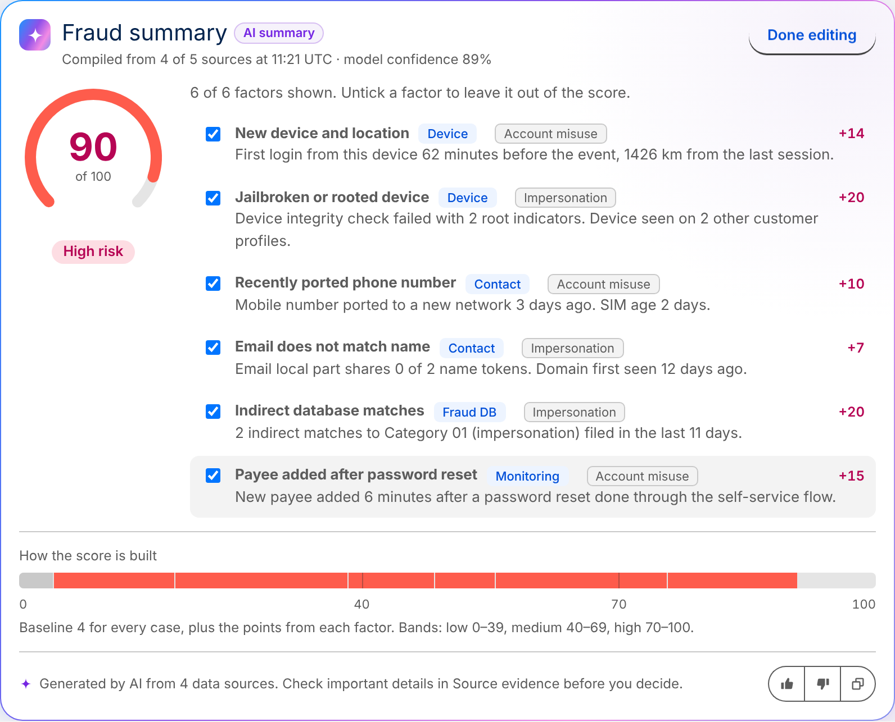
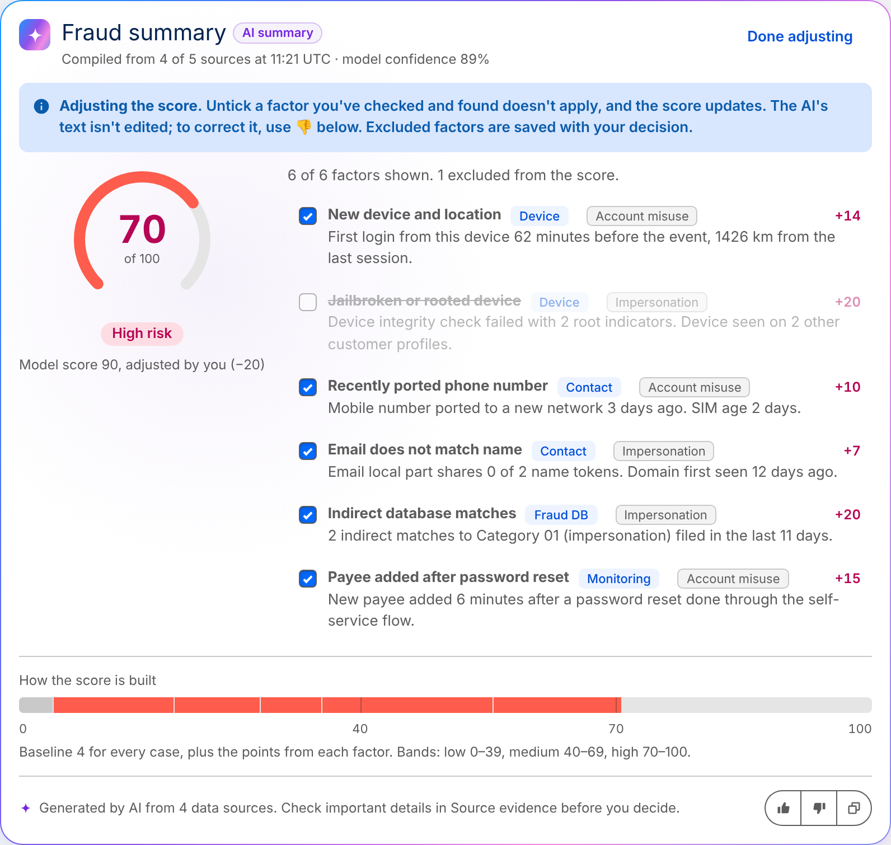
The principles we ended up with
- Big picture first, then evidence. Overview → queue → case.
- Exact figures, not vague words. Counts and time windows, never "recent".
- Explain every score. Show where each number comes from.
- Evidence in one place. No switching between systems.
- Plain language, with ⓘ help for specialist terms.
- Show information once, and buttons say exactly what they do.
- Colour has meaning. Red, amber, green for risk; purple only for AI.
- The specialist decides, not the AI, and every decision has a recorded reason.
- Mark anything written by AI, and collect feedback on every AI response.
- Follow the design system's rules, not just its colours: SLDS 2 Cosmos components, type and layout, plus the Agentic Experiences patterns for AI.
Next, proposed for round 18: add KYC / onboarding and bank-wide customer history as labelled sources, show the source and last-updated time on every profile field, list "Sources used" in the case snapshot, and warn when a source was unavailable.